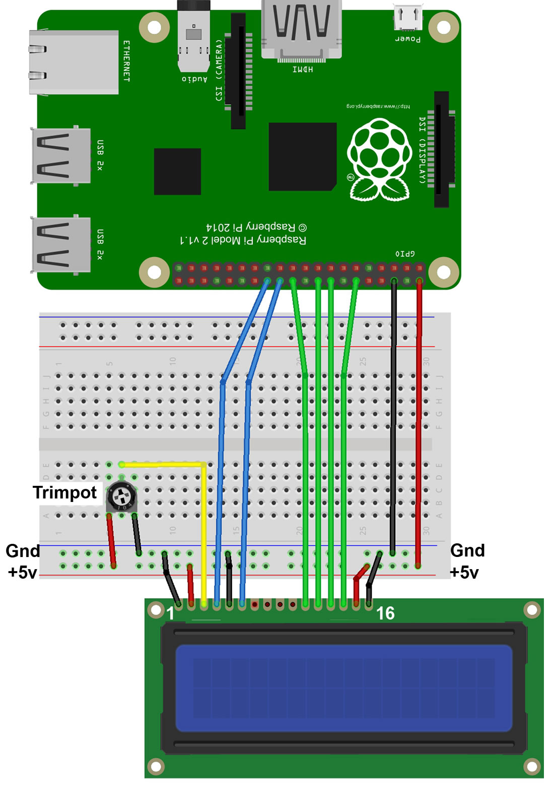

The idea of this project is
to print messages on LCD1602 connected
to the Raspberry PI.Here is
connection scheme for this project:

For this project you will also need
Apache Web Server and WiringPi library